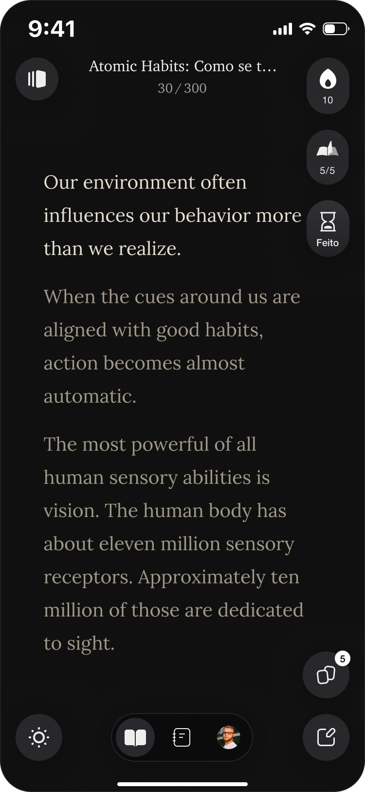

Leia, pense e lembre
sem distrações
Um leitor de PDF que segura os aplicativos que te distraem até você ler as páginas do dia.
Em breve na App Store
Um leitor de PDF que segura os aplicativos que te distraem até você ler as páginas do dia.
Em breve na App Store